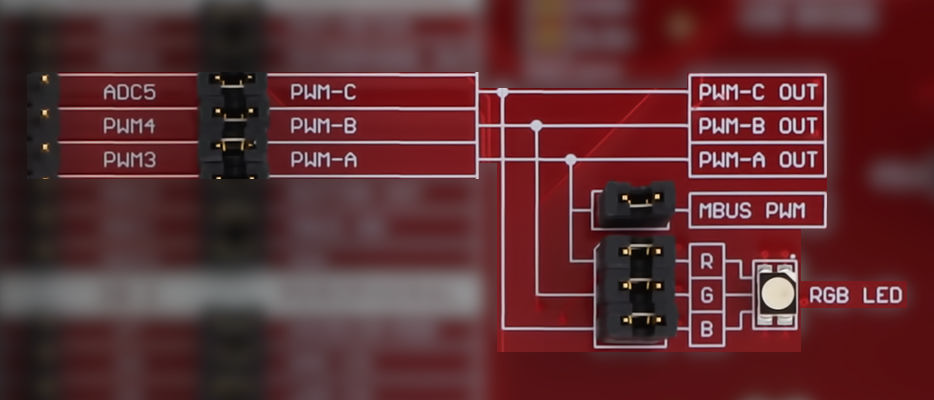
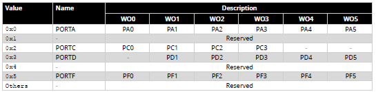
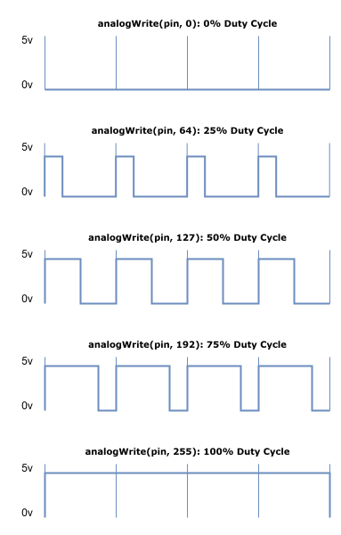
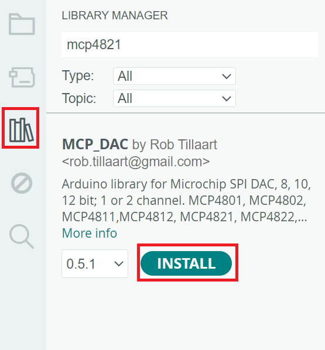

A computer with Arduino IDE installed (with DXCore libraries)
AVR64DD32 Curiosity Nano
EV58G97A Curiosity Explorer Board
Standard USB to Micro USB cable
This lab was designed to work with Windows operating systems. For other operating systems, steps may differ from what is listed in this lab manual.
Learning Objectives
This lab will introduce you to important embedded system concepts using the Curiosity Nano Explorer board. After completing this lab you should be able to:
Explain what an UART is and understand how to work with the Curiosity Nano's UART.
Describe the purpose of an analog-to-digital converter and understand how to work with the onboard potentiometer.
Explain what pulse width modulation is and understand how to work with the onboard RGB LED.
Explain what serial peripheral interface is and understand how to work with the onboard speaker.
UART is a communication protocol that enables serial data exchange between two devices without requiring a clock signal. It allows data to be sent and received asynchronously, meaning that data bits are transmitted sequentially over a single wire. This protocol is commonly used for serial communication with microcontrollers and computers.
In the Curiosity Nano, UART allows the board to connect with a computer through a serial communication interface. The Curiosity Nano has a built-in USB-to-UART converter that translates UART signals into USB signals. When the board is connected to a computer via USB, the computer sees it as a virtual COM port, enabling data transfer through serial communication tools like a terminal emulator. This setup allows you to send data to and receive data from the Curiosity Nano for debugging or data exchange.
Using the UART
Setting up UART is straightforward. In the following examples, I'll demonstrate two use cases:
Creating a simple calculator that takes user input from the computer and returns the result.
Controlling components on the Curiosity Nano board using input from the computer.
Serial Monitor setup
To set up UART communication on your computer, follow these steps using the Arduino IDE with the Curiosity Nano selected:
Open the Arduino IDE and ensure the Curiosity Nano board is selected.
Go to the Tools menu and select Serial Monitor.
In the Serial Monitor window, set the baud rate to match the one used by your microcontroller. For the examples provided, make sure to set the baud rate to 115200.
When you run the examples below, type your input in the text field labeled "Message" in the Serial Monitor, then press Enter to send it.
Calculator example
In the setup phase, you'll need to configure the UART and swap the default Arduino UART pins to the correct ones for the Curiosity Nano.
The full sketch is located at 4_lab-3/PWM/UART_Calculator.ino
Pin Setup: Since we're using the Curiosity Nano, swap the default UART pins to the appropriate ones with:
Serial.swap(3);
This is an important step for us to take! By invoking this Serial.swap function, specifically in our case with using 3, we are telling the Curiosity Nano to redirect the right UART in the AVR64DD32 to the USB debugger for the CDC channel.
Baud Rate: UART communication requires setting a baud rate, which determines the data transmission speed. Both the microcontroller and the computer must use the same baud rate to ensure proper communication. For the Curiosity Nano, the standard baud rate is 115200:
Serial.begin(115200);
User Prompt: To ask the user for input, use Serial.println:
Serial.println("Enter an expression (e.g., 5+3):");
In the main loop, we'll read user input from the UART buffer, split it into two numbers and an operator, then perform the calculation.
Data Availability Check: Use Serial.available() to see if there's data in the UART buffer.
if (Serial.available() > 0) { ... }
Reading Input: The input is read from the buffer using Serial.readStringUntil('\n'), which captures data until it hits a newline character.
String input = Serial.readStringUntil('\n');
Input Parsing: We loop through the input string to separate numbers and the operator:
while (i < input.length()) {
char c = input[i];
// Code to separate numbers and operator...
}
The digits before the operator are used to construct num1. The digits after the operator are used to construct num2. The operator (+,-,*,/) is stored in op. For the calculation, check the operator to determine the appropriate calculation to perform:
switch (op) {
case '+':
Serial.println(num1 + num2);
break;
case '-':
Serial.println(num1 - num2);
break;
case '*':
Serial.println(num1 * num2);
break;
case '/':
// Handle division with a check for division by zero
}
UART Code Example 1
void setup() {
Serial.swap(3);
Serial.begin(115200);
Serial.println("Enter an expression (e.g., 5+3):");
}
void loop() {
if (Serial.available() > 0) {
String input = Serial.readStringUntil('\n'); // Read the input until newline
float num1 = 0, num2 = 0;
char op;
bool operatorFound = false;
// Parse the input
int i = 0;
while (i < input.length()) {
char c = input[i];
if (isdigit(c)) {
if (!operatorFound) {
num1 = num1 * 10 + (c - '0');
} else {
num2 = num2 * 10 + (c - '0');
}
} else {
op = c; // Store the operator
operatorFound = true;
}
i++;
}
// Check if an operator was found and perform the calculation
if (operatorFound) {
switch (op) {
case '+':
Serial.println(num1 + num2);
break;
case '-':
Serial.println(num1 - num2);
break;
case '*':
Serial.println(num1 * num2);
break;
case '/':
if (num2 != 0) {
Serial.println(num1 / num2);
} else {
Serial.println("Error: Division by zero");
}
break;
default:
Serial.println("Invalid operator");
}
} else {
Serial.println("Invalid expression format");
}
}
}
LED Control example
In this example, we'll use UART communication to control the built-in LED on the Curiosity Nano, which is the same LED used in the "Blink LED" lab. The setup is very similar to both the UART calculator example above and the Blink LED lab.
The full sketch is located at 4_lab-3/PWM/UART_LED.ino
First, let's look at the setup() function:
#define LED_Pin 25
void setup() {
pinMode(LED_Pin, OUTPUT);
Serial.swap(3);
Serial.begin(115200);
delay(100);
Serial.println("Enter on or off.");
}
Pin Setup: We define LED_Pin as pin 25 and set it as an output using pinMode(LED_Pin, OUTPUT);.
UART Initialization: We configure the UART communication by swapping the UART pins (Serial.swap(3)) and setting the baud rate to 115200 using Serial.begin(115200);. This baud rate ensures both the microcontroller and the computer communicate at the same speed.
Delay and User Prompt: A 100-millisecond delay is added to make sure the UART is fully connected before sending the initial prompt to the user:
delay(100);
Serial.println("Enter 'on' or 'off'.");
In the loop() function, we monitor the serial input to control the LED:
void loop() {
// Check if there is data available in the UART buffer
if (Serial.available() > 0) {
// Read the user input until a newline character
String input = Serial.readStringUntil('\n');
// Trim any extra whitespace or newline characters
input.trim();
// Check the user's input and control the LED accordingly
if (input.equalsIgnoreCase("on")) {
// Turn the LED on
digitalWrite(LED_Pin, LOW);
Serial.println("LED is ON");
} else if (input.equalsIgnoreCase("off")) {
// Turn the LED off
digitalWrite(LED_Pin, HIGH);
Serial.println("LED is OFF");
} else {
// Handle invalid input
Serial.println("Invalid input. Type 'on' or 'off'.");
}
}
}
Reading Input: We first check if there's any available data using Serial.available() > 0. If data is present, it's read into a String using Serial.readStringUntil('\n');. The input.trim() function is used to remove any leading or trailing whitespace.
Controlling the LED: We then check the user's input:
If the input is "on", the LED is turned on by setting digitalWrite(LED_Pin, LOW); (assuming the LED is active low).
If the input is "off", the LED is turned off with digitalWrite(LED_Pin, HIGH);.
If the input doesn't match "on" or "off", an error message is displayed.
UART Code Example 2
#define LED_Pin 25
void setup() {
pinMode(LED_Pin, OUTPUT);
Serial.swap(3);
Serial.begin(115200);
delay(100);
Serial.println("Enter on or off.");
}
void loop() {
if (Serial.available() > 0) {
String input = Serial.readStringUntil('\n'); // Read the input until newline character
input.trim(); // Remove any extra spaces or newline characters
if (input.equalsIgnoreCase("on")) { // Check if input is "on"
digitalWrite(LED_Pin, LOW); // Turn LED on
Serial.println("LED is ON");
} else if (input.equalsIgnoreCase("off")) { // Check if input is "off"
digitalWrite(LED_Pin, HIGH); // Turn LED off
Serial.println("LED is OFF");
} else {
Serial.println("Invalid input. Type 'on' or 'off'."); // Handle invalid input
}
}
}
Pulse Width Modulation
Digital signals are binary (0 or 1), while analog signals have a continuous range of values. To convert analog input into a digital format, we use an Analog-to-Digital Converter (ADC). To control analog devices with a digital signal, a Digital-to-Analog Converter (DAC) is typically used to generate true analog signals. Pulse Width Modulation (PWM) offers a cost-effective alternative to a DAC by mimicking analog behavior with a digital signal. PWM can control devices like motors and lights, producing an analog-like signal instead of a true analog output.
How PWM Works
PWM generates a variable output voltage by rapidly switching a pin between high and low states at a fixed frequency. The duty cycle (the percentage of time the pin is high) determines the average voltage output. By increasing or decreasing the relative on-time, the average voltage changes. This average voltage provides a lower power equivalent, while still maintaining full voltage during the pulse's on-state.
Applications of PWM
PWM is widely used in various applications that require the control of power and brightness:
Motor Speed Control: Adjusting the speed of motors by controlling the average voltage delivered.
LED Dimming: Adjusting the brightness of LEDs by changing the duty cycle.
Audio Synthesis: Modulating audio signals for sound generation.
Advantages of PWM
Cost-Effective: PWM provides an inexpensive way to simulate analog control without requiring expensive DACs.
Efficiency: PWM can efficiently control power while reducing power losses, as full voltage is only used during the pulse's on-state.
Key Parameters of PWM
Frequency: Frequency measures how fast the signal is alternating between HIGH and LOW. It is measured in Hz. Its inverse is the full period time interval.
Frequency = (1 / Period) Hz
Duty Cycle: The duty cycle is the fraction of time the signal is "high" versus "low". It is expressed as a percentage. The duty cycle formula is as follows:
Duty Cycle = (Time On Within Period) / (Period) * 100%
Pulse Width Modulation on the Curiosity Nano
The AVR64DD32 microcontroller provides hardware support for generating PWM signals through its internal timers. These signals are mapped to specific I/O pins that can output the PWM waveform when configured properly. The PWM functionality is provided by timers that are responsible for generating the pulse train.
It uses three primary timers—TCA, TCB, and TCD—to generate PWM signals. Each timer has different modes of operation, providing flexibility in how the PWM signals are generated.
The following pins on Curiosity Nano Evaluation Kit can be easily configured for generating PWM output:
PIN_PD1
PIN_PD2
PIN_PD3
On the Explorer Board, you will find an RGB LED connected to those PWM outputs. We will be utilizing it to evaluate the functionality of PWM generation.

Curiosity Nano Explorer Board
Setting Up Pulse Width Modulation
Generating PWM output on the Curiosity Nano requires a simple set up. If you want to use PD1 for PWM, you would configure Timer A (TCA0) to output PWM on Port D. This setup would involve:
Setting the correct PORTMUX [The PORTMUX (Port Multiplexer) is a feature in the AVR64DD32 microcontroller that allows you to remap or reassign specific peripheral functions to different pins based on their available ports] register to route the PWM signal to Port D.
Configuring the TCA registers for the desired PWM frequency and duty cycle. [analogWrite() encapsulates this functionality. We will explore analogWrite() in the sample sketches]
This bit field controls the pin positions for TCA0 signals.

PORTMUX bit field
The following line would ensure that the PWM signal generated by TCA0 is routed to PORTD, where PD1, PD2, and PD3 are located, allowing them to function as PWM outputs.
PORTMUX.TCAROUTEA = PORTMUX_TCA0_PORTD_gc;
Sample Sketch 1: analogWrite
This sketch uses analogWrite to simulate an analog signal with PWM, where the perceived voltage is controlled by adjusting the duty cycle of the signal. For example, a 50% duty cycle (pin HIGH for half the time and LOW for the other half) simulates half the maximum voltage. If the pin is connected to a device like an LED or a motor, the rapid switching is perceived as a dimmer LED or a slower motor speed because of the averaging effect. In Arduino, the analogWrite function is used to output a PWM signal to a specified pin with a certain duty cycle. The graphic below illustrates how analogWrite() uses a value in the range of 0 to 255 to control the duty cycle.

analogWrite duty cycle
The sketch demonstrates how to fade the brightness of the Explorer Board's RGB LED connected to pins PD1, PD2, and PD3, corresponding to red, green, and blue. Each color's brightness is adjusted one at a time, creating a fading effect. This sketch has been adapted for the AVR64DD32 microcontroller from the original example found at: File -> Examples -> 03.Analog -> AnalogWriteMega.
The full sketch is located at 4_lab-3/PWM/PWM_AnalogWrite.ino
Start by defining constants to hold the range of pins to control. By using lowestPin and highestPin, the program can iterate through all three pins dynamically.
const int lowestPin = PIN_PD1;
const int highestPin = PIN_PD3;
Configure the microcontroller to route the TCA0 signal (Timer/Counter A) to PORTD, where the pins PD1, PD2, and PD3 are located.
void setup() {
// Re-route the signal generated by TCA0 to PORTD (which includes PD1, PD2, PD3)
PORTMUX.TCAROUTEA = PORTMUX_TCA0_PORTD_gc;
}
In an outer for loop, iterate over the selected pins to control them one at a time.
Second, write another inner for loop to gradually decrease the brightness of the current LED with a value from 255 to 0.
for (int brightness = 255; brightness >= 0; brightness--) {
analogWrite(thisPin, brightness); // Adjust brightness for this pin
delay(2); // Delay to control the fade speed
}
Pause for 100 milliseconds before fading the next color. Close the outer loop and the loop() function.
// Pause between color changes:
delay(100);
}
}
Sample Sketch 2: Potentiometer Dimming
This sketch allows you to adjust the brightness of the RGB LED using the potentiometer on the Curiosity Nano Explorer Board. It is based on the sample sketch located in File -> Examples -> 03.Analog -> AnalogInOutSerial, adapted for the AVR64DD32.
The sketch continuously reads the analog value from the potentiometer connected to PIN_PD7 using analogRead(). It uses the map() function to scale the unsigned 10-bit input value (0-1023) to an unsigned 8-bit value (0-255), which corresponds to the PWM duty cycle for controlling the LED's brightness. For debugging purposes, the raw potentiometer value (sensorValue) and the mapped PWM output value (outputValue) are printed to the Serial Monitor. This allows you to observe the changes in brightness as the potentiometer is adjusted.
The full sketch is located at 4_lab-3/PWM/PWM_PotDimming.ino
Define analogInPin as PIN_PD7 to read input from the potentiometer, and analogOutPin as PIN_PD1 to control the red LED using PWM. Initialize sensorValue to store the potentiometer reading and outputValue to store the mapped PWM brightness value.
const int analogInPin = PIN_PD7;
const int analogOutPin = PIN_PD1;
int sensorValue = 0;
int outputValue = 0;
In the setup() function, configure serial communication by swapping UART pins with Serial.swap(3) and starting communication at 115200 baud with Serial.begin(115200). Enable PWM on Port D.
Adjust the LED brightness by writing the mapped value to the output pin with analogWrite(analogOutPin, outputValue). Print the sensor and output values to the Serial Monitor for debugging using Serial.print().
Finally, include a 2-millisecond delay with delay(2) to allow the ADC to stabilize before the next reading. Close the loop function.
delay(2);
}
Sketch 3: Additional Libraries
This sketch uses the Dx_PWM library to control the brightness of a white light on an RGB LED by generating PWM signals on three pins (PD1, PD2, and PD3) simultaneously. By adjusting the duty cycle of the PWM signals for each color (Red, Green, and Blue), it gradually increases and decreases the brightness of the combined white light. The sketch allows for precise control of the white light intensity and prints the pin information and duty cycle to the serial monitor.
Please open the Library Manager and search for Dx PWM. Download and install the library.
Dx_PWM Library
We will revisit the Dx_PWM library when using PWM to control the speaker.
While the standard Arduino analogWrite() function easily supports PWM output on a single pin at a time, this sketch allows for simultaneous control of PWM on three pins for the RGB LED, something that would require more effort to achieve with analogWrite(). It is based on sample sketches available at the Dx_PWM repo. The Dx_PWM library leverages the PWM's 16-bit precision, which is quite fine-grained for PWM control.
The full sketch is located at 4_lab-3/PWM/PWM_AdvancedDimming.ino
Include the Dx_PWM library, create an array of PWM_Pins, declare an array of Dx_PWM instances to control each pin, and format a string for Serial Monitor output.
Configure PORTMUX to enable PWM on port D, enable the Serial debugger and initialize each PWM instance by passing the pin reference as an argument to the constructor.
void setup()
{
PORTMUX.TCAROUTEA = PORTMUX_TCA0_PORTD_gc;
SerialDebug.swap(3);
SerialDebug.begin(115200);
for (uint8_t index = 0; index < NUM_OF_PINS; index++)
{
pinMode(PWM_Pins[index], OUTPUT);
PWM_Instance[index] = new Dx_PWM(PWM_Pins[index], 100.0f, 100.0f);
}
}
Loop from 10% brightness (6656) to 90% brightness (58880) in steps of 6656. For each value, loop through each PWM pin, calculate the duty cycle as a percentage, and set the new brightness. Add a short delay and print the current PWM information to the Serial Monitor.
void loop()
{
for (uint16_t j = 6656; j <= 58880; j += 6656) {
// Loop through each PWM pin (PD1, PD2, PD3)
for (uint8_t index = 0; index < NUM_OF_PINS; index++) {
// Convert the value `j` to a percentage for the duty cycle
float dutyCycle = (j / (float)65536) * 100.0;
// Set the duty cycle for the current pin
PWM_Instance[index]->setPWM(PWM_Pins[index], 100.0f, dutyCycle);
// Delay for 10 milliseconds
delay(10);
// Print the current PWM information to the Serial Monitor
printPWMInfo(PWM_Instance[index]);
}
}
Backwards from the previous step, loop from 90% brightness (58880) to 10% brightness (6656) in steps of 6656. For each value, loop through each PWM pin, calculate the duty cycle as a percentage, and set the new brightness. Add a short delay and print the current PWM information to the Serial Monitor. Close the outer loop and the loop() function.
for (uint16_t j = 58880; j >= 6656; j -= 6656) {
for (uint8_t index = 0; index < NUM_OF_PINS; index++) {
float dutyCycle = (j / (float)65536) * 100.0;
PWM_Instance[index]->setPWM(PWM_Pins[index], 100.0f, dutyCycle);
delay(10);
printPWMInfo(PWM_Instance[index]);
}
}
}
ADC (Analog-To-Digital) Converters
An Analog-To-Digital (ADC) converter is a tool that takes real world reading from a sensor (analog) and converts it into a value that can be understood by a program (digital).
Generally speaking, analog data comes in through sensors or other peripherals, and is continuous in nature; This means that it is not set to certain breakpoints or restrictions like variables in code are, think things like voltage or temperature.
In order to translate this continuous data into digital data, 'breakpoints' are set in order to determine how to round the continuous data to fit the digital version. In the below graph you can see an example of this, where values are simply rounded up or down depending on if the value is equal to the actual breakpoint.
Specifically, we can look at the space between 011 and 100. Here, we see that the red line (representing digital) only ever increases after the blue line (representing analog) reaches the dashed line above it, even though the blue line is between 011 and 100. While different Analog-To-Digital converters can interpret these breakpoints differently, especially depending on what is being digitized, the general idea of rounding based on breakpoints remains consistent.
To further understand this concept, we will be using the on board potentiometer on the Curiosity Nano Explorer board, pictured below.
Curiosity Nano Explorer Potentiometer
ADC Demonstration Sketch
In order to see how the board takes outside (analog) input and translates it into digital values, we will create a small sketch that will do two main things: read in analog input from the potentiometer and display it to see how it is digitized.
The full sketch is located at 4_lab-3/PWM/PotentiometerLED.ino
To accomplish this, we will be using the AmberLEDs from the previous lab, as well as the UART to print the digitized value to the serial monitor.
Our first few lines define the very important components we will use to accomplish this, namely the POTMETERPIN (with value of 19, the identifier index found in pins_arduino.c for the Curiosity Nano board). We also have the familiar import for the AmberLED component (refer to lab 2 for further details).
void setup() {
// put your setup code here, to run once:
Serial.swap(3);
Serial.begin(115200);
uint8_t pin_id, status;
status = mcp_leds.begin(0x25);
for (pin_id = 0; pin_id < 8; pin_id++) {
mcp_leds.pinMode(pin_id, OUTPUT);
mcp_leds.digitalWrite(pin_id, HIGH);
}
}
In our setup function, we do two important steps:
Initialize our UART serialization:
Serial.swap(3);
Serial.begin(115200);
and initialize our AmberLEDS
uint8_t pin_id, status;
status = mcp_leds.begin(0x25);
for (pin_id = 0; pin_id < 8; pin_id++) {
mcp_leds.pinMode(pin_id, OUTPUT);
mcp_leds.digitalWrite(pin_id, HIGH);
}
Next, our simple loop function:
void loop() {
// put your main code here, to run repeatedly:
int readValue = analogRead(POTMETERPIN);
int leds = 0;
Serial.println("Potmeter value: " + String(readValue));
while(readValue > 128) {
readValue = readValue - 128;
leds++;
}
for(int i = 0; i < 8; i++){
if(i <= leds){
mcp_leds.digitalWrite(7-i, LOW);
} else {
mcp_leds.digitalWrite(7-i, HIGH);
}
}
}
Here, we do the main part of this lab, the line
int readValue = analogRead(POTMETERPIN);
Which will read in the analog input from the potentiometer, with a value of between 0 and 1024. As mentioned in the graph at the start of this section, the potentiometer includes an internal ADC that reads in these values and digitizes them, allowing us to use them as an integer value in this case in code. Note: since analog values are continuous, the value may be somewhat inconsistent in what it reports, such as swapping between 1023 and 1024 at max value.
In the remaining portion of our loop function, we create a variable to hold how many LEDs to illuminate, and print the value read from the potentiometer to the UART serial monitor. Then, since we have 8 total LEDs, we repeatedly subtract 128 from the value we have read and add 1 LED to light up, until the value is less than 128.
Finally, we loop through all 8 possible LEDs, and for however many we found for the "leds" variable, we set their value to LOW to turn them on, and turn the rest to HIGH to turn them off (especially important so they don't remain on when we go from a higher to lower value!) Additionally, we are using an index of 7-i since the leftmost LED is considered at index 7, allowing it to grow left to right instead of right to left.
And that's our basic demonstration of ADCs! They are a simple but very important tool for any microcontroller to interface with outside sensors and other analog signals.
SPI
Serial Peripheral Interface is a communication protocol used to send data between the microcontroller and multiple peripherals. SPI has two main data lines: the serial clock line and the data transfer line. Since data transfer is bidirectional, the data transfer line is typically decomposed into the Peripheral In Controller Out (PICO) line and the Peripheral Out Controller In (POCI) line. Finally, SPI also includes a Chip Select (CS) line and a Load Digital to Analog Converter (LDAC) line.
PICO – used to read data from the peripheral
POCI – used to send data to the peripheral
SPI SCK – used to synchronize communication between the controller and peripheral
CS – used to specify which peripheral to send data to
LDAC – used to send or receive data from multiple peripherals at the same time
The SPI communication protocol relies on a consistent series of steps to send data:
Set the pin tied to the Chip Select of the target peripheral to LOW. This marks the peripheral as the destination of the data transfer.
Set the Serial Clock Line to LOW. This is the resting state of the communication line.
Write either a HIGH or LOW value to the POCI line or call digitalRead from the PICO line depending on if data is being sent or received.
Write a HIGH value then a LOW value to the Serial Clock Line (SCK). This pulses the clock line, signaling the data to be sent over
Repeat steps 3 and 4 until all data has been transferred over.
Set the Chip Select line of the peripheral to HIGH. This means that the data transfer is done and frees up the line to communicate with other peripherals.
The LDAC line is set to LOW by default. By setting it to HIGH, all data written to the peripherals will not immediately be sent, allowing for synchronous data transfer. Then, setting the LDAC to LOW causes all awaiting data to be sent to all target peripherals at the same time.
SPI Peripherals
The Curiosity Nano comes packaged with 4 SPI compatible peripherals:
This section will focus on the first two peripherals: the DAC and the EEPROM.
DAC Lab
The DAC is used to convert digital pin values (LOW and HIGH) into an analog voltage (between 0V and 3.3V). The onboard DAC, the MCP4821, is located to the left of the Curiosity Nano. It is connected to the onboard speaker by default. Changing the voltage changes the volume of the speaker. The following steps will guide you on how to interface with the speaker using SPI.
Create a new sketch and navigate to the Library Manager on the left hand side. Search for "mcp4821" and install the MCP_DAC library by Rob Tillaart.

MCP_DAC Library Download
Import the SPI.h and MCP_DAC.h libraries. Define the SPI_COPI, SPI_SCK, and DAC_CS values according to the Curiosity Explorer to CNANO mappings. Define MAX_VOLUME to be 4095. This is the maximum value that can be represented since the DAC is 12 bits (2^12).
The full sketch is located at 4_lab-3/SpeakerDAC/SpeakerDAC.ino
Set the port to the Arduino Explorer and the programmer under Tools, and Upload Using Programmer. Adjust the gain knob on the speaker until you can hear the sound. Use the reset button on the Curiosity Nano to restart the program.
The lab uses two sequential writes to create a pseudo wave in order to generate a sound, which is not ideal for playing specific frequencies. To have more control over what frequency is played, we need to use pulse width modulation to control the voltage instead of using an ADC, since the ADC can only control the amplitude of a wave and not the frequency.
EEPROM Lab
The EEPROM is a read-only memory device located to the left of the Curiosity Nano. It has 2048 pages, or continuous blocks of memory, with each page having 256 bytes of memory, also referred to as cells. The memory is non volatile, meaning that disconnecting the power will not erase the memory. The EEPROM has a limited number of writes that can be performed before it starts to fail, which ranges from 10,000 to 100,000. The following steps will guide you through using the EEPROM.
📌 The full sketch is located at 4_lab-3/SpiEEPROM/SpiEEPROM.ino
Create a new sketch and import the EEPROM library. This library is already built into Arduino.
#include
Setup serial communication on 115,200 baud. This will allow you to see the contents of the EEPROM from the Serial Monitor.
void setup() {
Serial.swap(3);
Serial.begin(115200);
while (!Serial);
}
In the setup() function, use EEPROM.update to write the numbers from 1 to 10 into the first 10 cells. Note that we use update instead of write. Write will always write regardless of the value while update will check if the values are different before writing. This practice prevents redundant writes from occurring.
Serial.println(F("Writing numbers from 1 to 10 to the first 10 cells!"));
for (index = 0; index < 10; index++) {
EEPROM.update(index, index + 1);
}
In the setup() function, use EEPtr from EEPROM.h to iterate through the first ten cells, printing their contents. EEPtr serves as a pointer to a specific cell that can be used to access or modify the cell's value.
In the setup() function, traverse the first ten cells, square each value and store it back into the cell.
Serial.println(F("Squaring the first 10 cells!"));
for (index = 0; index < 10; index++) {
EEPROM.get(index, read_value);
EEPROM.update(index, read_value * read_value);
}
Print the contents of the first ten cells to see the result of the previous step. Refer back to step 4 on how to do this.
Set the port to the Arduino Explorer and the programmer under Tools, and Upload Using Programmer. Go to Tools → Serial Monitor and set the rate to 115,200 to see the output of the program. Rerun the program by pressing the reset button on the Curiosity Nano.
EEPROM Lab Output
Remove the EEPROM update sections of the code and see what happens!
Speaker with PWM (Bonus Section)
In the DAC lab section, we interfaced with the speaker using the onboard Digital to Analog Converter (DAC). However, we were unable to control the frequency (pitch) of the speaker. Using Pulse Width Modulation (PWM) allows us to control the frequency of the speaker, which will allow us to play specific pitches (notes). The following steps will guide you through connecting PWM to the speaker. This sketch can be found under Lab 3/PWN_BasicSpeaker.
This sketch can be found under Lab 3/PWN_BasicSpeaker.
On your Curiosity Explorer board, remap the PWM-A pin to the AMP-IN pin located next to the speaker.
Remapping PWM for Speaker
Create a new sketch and navigate to the Library Manager on the left hand side of Arduino IDE. Search for "Dx_PWM" by Khoi Hoang and click install.
In the sketch, import the Dx_PWM library. Define PWM_PIN to the pin mapped to PWM-A.
#include "Dx_PWM.h"
#define PWM_PIN PIN_PD1
In the setup() function, reroute the TCA timer A to the TCA0 timer port. This connects PWM to Arduino's internal timer. Then, create an instance of Dx_PWM with the PWM_PIN, a frequency of 0, and a duty cycle of 50%.
Set the port to the Arduino Explorer and the programmer under Tools, and Upload Using Programmer. Enable the speaker by switching it to ON and adjust the gain until you can hear sound.
In the speaker_pwm_advanced sketch in the repository, there is a pwm_notes.h file that you can include in your own sketches to have access to predefined notes to avoid the hassle of finding the frequencies. Copy the file into the same folder as your sketch and include it using "#include "pwm_notes.h".
Check out Lab 3/PWN_AdvancedSpeaker for a more complex example.